Solve Percent Applications
Translate and Solve Basic Percent Equations
We will solve percent equations using the methods we used to solve equations with fractions or decimals. Without the tools of algebra, the best method available to solve percent problems was by setting them up as proportions. Now as an algebra student, you can just translate English sentences into algebraic equations and then solve the equations.
We can use any letter you like as a variable, but it is a good idea to choose a letter that will remind us of what you are looking for. We must be sure to change the given percent to a decimal when we put it in the equation.
Translate and solve: What number is 35% of 90?
Solution
Solution
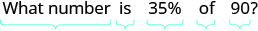 |
|
| Translate into algebra. Let = the number. | |
| Remember "of" means multiply, "is" means equals. | |
| Multiply. | |
| is of |
We must be very careful when we translate the words in the next example. The unknown quantity will not be isolated at first, like it was in Example 1. We will again use direct translation to write the equation.
Translate and solve: 6.5% of what number is $1.17?
Solution
Solution
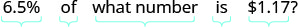 |
|
| Translate. Let the number. | 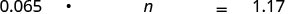 |
| Multiply. | |
| Divide both sides by 0.065 and simplify. | |
| of is |
In the next example, we are looking for the percent.
Translate and solve: 144 is what percent of 96?
Solution
Solution
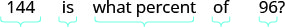 |
|
| Translate into algebra. Let the percent. | 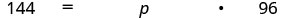 |
| Multiply. | |
| Divide by 96 and simplify. | |
| Convert to percent. | |
| is of |
Note that we are asked to find percent, so we must have our final result in percent form.
Solve Applications of Percent
Many applications of percent—such as tips, sales tax, discounts, and interest—occur in our daily lives. To solve these applications we’ll translate to a basic percent equation, just like those we solved in previous examples. Once we translate the sentence into a percent equation, we know how to solve it.
We will restate the problem solving strategy we used earlier for easy reference.
Now that we have the strategy to refer to, and have practiced solving basic percent equations, we are ready to solve percent applications. Be sure to ask yourself if your final answer makes sense—since many of the applications will involve everyday situations, you can rely on your own experience.
Dezohn and his girlfriend enjoyed a nice dinner at a restaurant and his bill was $68.50. He wants to leave an 18% tip. If the tip will be 18% of the total bill, how much tip should he leave?
Solution
Solution
| Step 1. Read the problem. | ||
| Step 2. Identify what we are looking for. | the amount of tip should Dezohn leave | |
| Step 3. Name what we are looking for. | ||
| Choose a variable to represent it. | Let t = amount of tip. | |
| Step 4. Translate into an equation. | 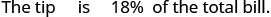 |
|
| Write a sentence that gives the information to find it. | 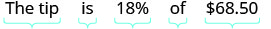 |
|
| Translate the sentence into an equation. | ||
| Step 5. Solve the equation. Multiply. | ||
| Step 6. Check. Does this make sense? | ||
| Yes, 20% of $70 is $14. | ||
| Step 7. Answer the question with a complete sentence. | Dezohn should leave a tip of $12.33. |
Notice that we used t to represent the unknown tip.
The label on Masao’s breakfast cereal said that one serving of cereal provides 85 milligrams (mg) of potassium, which is 2% of the recommended daily amount. What is the total recommended daily amount of potassium?
Solution
Solution
| Step 1. Read the problem. | ||
| Step 2. Identify what we are looking for. | the total amount of potassium that is recommended | |
| Step 3. Name what we are looking for. | ||
| Choose a variable to represent it. | Let total amount of potassium. | |
| Step 4. Translate. Write a sentence that gives the information to find it. | 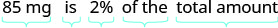 |
|
| Translate into an equation. | ||
| Step 5. Solve the equation. | ||
| Step 6. Check. Does this make sense? | ||
| Yes, 2% is a small percent and 85 is a small part of 4,250. | ||
| Step 7. Answer the question with a complete sentence. | The amount of potassium that is recommended is 4,250 mg. |
Mitzi received some gourmet brownies as a gift. The wrapper said each brownie was 480 calories, and had 240 calories of fat. What percent of the total calories in each brownie comes from fat?
Solution
Solution
| Step 1. Read the problem. | ||
| Step 2. Identify what we are looking for. | the percent of the total calories from fat | |
| Step 3. Name what we are looking for. | ||
| Choose a variable to represent it. | Let percent of fat. | |
| Step 4. Translate. Write a sentence that gives the information to find it. | 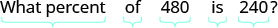 |
|
| Translate into an equation. | 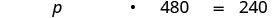 |
|
| Step 5. Solve the equation. | ||
| Divide by 480. | ||
| Put in a percent form. | ||
| Step 6. Check. Does this make sense? | ||
| Yes, 240 is half of 480, so 50% makes sense. | ||
| Step 7. Answer the question with a complete sentence. | Of the total calories in each brownie, 50% is fat. |
Find Percent Increase and Percent Decrease
People in the media often talk about how much an amount has increased or decreased over a certain period of time. They usually express this increase or decrease as a percent.
To find the percent increase, first we find the amount of increase, the difference of the new amount and the original amount. Then we find what percent the amount of increase is of the original amount.
In 2011, the California governor proposed raising community college fees from $26 a unit to $36 a unit. Find the percent increase. (Round to the nearest tenth of a percent.)
Solution
Solution
| Step 1. Read the problem. | ||
| Step 2. Identify what we are looking for. | the percent increase | |
| Step 3. Name what we are looking for. | ||
| Choose a variable to represent it. | Let the percent. | |
| Step 4. Translate. Write a sentence that gives the information to find it. | ||
| First find the amount of increase. | new amount − original amount = increase | |
| Find the percent. | Increase is what percent of the original amount? | |
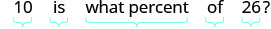 |
||
| Translate into an equation. | 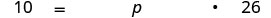 |
|
| Step 5. Solve the equation. | ||
| Divide by 26. | 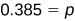 |
|
| Change to percent form; round to the nearest tenth. | 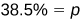 |
|
| Step 6. Check. Does this make sense? | ||
| Yes, 38.4% is close to , and 10 is close to of 26. | ||
| Step 7. Answer the question with a complete sentence. | The new fees represent a 38.5% increase over the old fees. |
Notice that we rounded the division to the nearest thousandth in order to round the percent to the nearest tenth.
Finding the percent decrease is very similar to finding the percent increase, but now the amount of decrease is the difference of the original amount and the new amount. Then we find what percent the amount of decrease is of the original amount.
The average price of a gallon of gas in one city in June 2014 was $3.71. The average price in that city in July was $3.64. Find the percent decrease.
Solution
Solution
| Step 1. Read the problem. | ||
| Step 2. Identify what we are looking for. | the percent decrease | |
| Step 3. Name what we are looking for. | ||
| Choose a variable to represent that quantity. | Let the percent decrease. | |
| Step 4. Translate. Write a sentence that gives the information to find it. | ||
| First find the amount of decrease. | ||
| Find the percent. | Decrease is what percent of the original amaount? | |
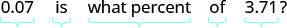 |
||
| Translate into an equation. | 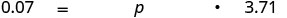 |
|
| Step 5. Solve the equation. | ||
| Divide by 3.71. | ||
| Change to percent form; round to the nearest tenth. | ||
| Step 6. Check. Does this make sense? | ||
| Yes, if the original price was $4, a 2% decrease would be 8 cents. | ||
| Step 7. Answer the question with a complete sentence. | The price of gas decreased 1.9%. |
Solve Simple Interest Applications
Do you know that banks pay you to keep your money? The money a customer puts in the bank is called the principal, P, and the money the bank pays the customer is called the interest. The interest is computed as a certain percent of the principal; called the rate of interest, r. We usually express rate of interest as a percent per year, and we calculate it by using the decimal equivalent of the percent. The variable t, (for time) represents the number of years the money is in the account.
To find the interest we use the simple interest formula,
Interest may also be calculated another way, called compound interest. This type of interest will be covered in later math classes.
The formula we use to calculate simple interest is To use the formula, we substitute in the values the problem gives us for the variables, and then solve for the unknown variable. It may be helpful to organize the information in a chart.
Nathaly deposited $12,500 in her bank account where it will earn 4% interest. How much interest will Nathaly earn in 5 years?
Solution
Solution
| Step 1. Read the problem. | |
| Step 2. Identify what we are looking for. | the amount of interest earned |
|
Step 3. Name what we are looking for. Choose a variable to represent that quantity. |
Let the amount of interest. |
|
Step 4. Translate into an equation.
Write the formula. Substitute in the given information. |
|
| Step 5. Solve the equation. | |
|
Step 6. Check: Does this make sense?
Is $2,500 a reasonable interest on $12,500? Yes. |
|
| Step 7. Answer the question with a complete sentence. | The interest is $2,500. |
There may be times when we know the amount of interest earned on a given principal over a certain length of time, but we don’t know the rate. To find the rate, we use the simple interest formula, substitute in the given values for the principal and time, and then solve for the rate.
Loren loaned his brother $3,000 to help him buy a car. In 4 years his brother paid him back the $3,000 plus $660 in interest. What was the rate of interest?
Solution
Solution
| Step 1. Read the problem. | |
| Step 2. Identify what we are looking for. | the rate of interest |
|
Step 3. Name what we are looking for. Choose a variable to represent that quantity. |
Let the rate of interest. |
|
Step 4. Translate into an equation.
Write the formula. Substitute in the given information. |
|
|
Step 5. Solve the equation.
Divide. Change to percent form. |
|
|
Step 6. Check: Does this make sense?
|
|
| Step 7. Answer the question with a complete sentence. | The rate of interest was 5.5%. |
Notice that in this example, Loren’s brother paid Loren interest, just like a bank would have paid interest if Loren invested his money there.
Eduardo noticed that his new car loan papers stated that with a 7.5% interest rate, he would pay $6,596.25 in interest over 5 years. How much did he borrow to pay for his car?
Solution
Solution
| Step 1. Read the problem. | |
| Step 2. Identify what we are looking for. | the amount borrowed (the principal) |
|
Step 3. Name what we are looking for. Choose a variable to represent that quantity. |
Let principal borrowed. |
|
Step 4. Translate into an equation.
Write the formula. Substitute in the given information. |
|
|
Step 5. Solve the equation.
Divide. |
|
|
Step 6. Check: Does this make sense?
|
|
| Step 7. Answer the question with a complete sentence. | The principal was $17,590. |
Solve Applications with Discount or Mark-up
Applications of discount are very common in retail settings. When you buy an item on sale, the original price has been discounted by some dollar amount. The discount rate, usually given as a percent, is used to determine the amount of the discount. To determine the amount of discount, we multiply the discount rate by the original price.
We summarize the discount model in the box below.
Elise bought a dress that was discounted 35% off of the original price of $140. What was ⓐ the amount of discount and ⓑ the sale price of the dress?
Solution
Solution
|
ⓐ
|
|
| Step 1. Read the problem. | |
| Step 2. Identify what we are looking for. | the amount of discount |
|
Step 3. Name what we are looking for. Choose a variable to represent that quantity. |
Let the amount of discount. |
|
Step 4. Translate into an equation.
Write a sentence that gives the information to find it. Translate into an equation. |
The discount is 35% of $140. |
| Step 5. Solve the equation. | |
|
Step 6. Check: Does this make sense?
Is a $49 discount reasonable for a $140 dress? Yes. |
|
| Step 7. Write a complete sentence to answer the question. | The amount of discount was $49. |
Read the problem again.
| Step 1. Identify what we are looking for. | the sale price of the dress | |
| Step 2. Name what we are looking for. | ||
| Choose a variable to represent that quantity. | Let the sale price. | |
| Step 3. Translate into an equation. | ||
| Write a sentence that gives the information to find it. | 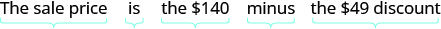 |
|
| Translate into an equation. | ||
| Step 4. Solve the equation. | ||
| Step 5. Check. Does this make sense? | ||
| Is the sale price less than the original price? | ||
| Yes, $91 is less than $140. | ||
| Step 6. Answer the question with a complete sentence. | The sale price of the dress was $91. |
There may be times when we know the original price and the sale price, and we want to know the discount rate. To find the discount rate, first we will find the amount of discount and then use it to compute the rate as a percent of the original price. Example 13 will show this case.
Jeannette bought a swimsuit at a sale price of $13.95. The original price of the swimsuit was $31. Find the ⓐ amount of discount and ⓑ discount rate.
Solution
Solution
|
ⓐ
|
|
| Step 1. Read the problem. | |
| Step 2. Identify what we are looking for. | the amount of discount |
|
Step 3. Name what we are looking for. Choose a variable to represent that quantity. |
Let the amount of discount. |
|
Step 4. Translate into an equation.
Write a sentence that gives the information to find it. Translate into an equation. |
The discount is the difference between the original price and the sale price. |
| Step 5. Solve the equation. | |
|
Step 6. Check: Does this make sense?
Is 17.05 less than 31? Yes. |
|
| Step 7. Answer the question with a complete sentence. | The amount of discount was $17.05. |
Read the problem again.
| Step 1. Identify what we are looking for. | the discount rate | |
| Step 2. Name what we are looking for. | ||
| Choose a variable to represent it. | Let the discount rate. | |
| Step 3. Translate into an equation. | ||
| Write a sentence that gives the information to find it. | 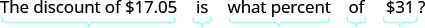 |
|
| Translate into an equation. | ||
| Step 4. Solve the equation. | ||
| Divide both sides by 31. | ||
| Change to percent form. | ||
| Step 5. Check. Does this make sense? | ||
| Is $17.05 equal to 55% of $31? | ||
| Step 6. Answer the question with a complete sentence. | The rate of discount was 55%. |
Applications of mark-up are very common in retail settings. The price a retailer pays for an item is called the original cost. The retailer then adds a mark-up to the original cost to get the list price, the price he sells the item for. The mark-up is usually calculated as a percent of the original cost. To determine the amount of mark-up, multiply the mark-up rate by the original cost.
We summarize the mark-up model in the box below.
Adam’s art gallery bought a photograph at original cost $250. Adam marked the price up 40%. Find the ⓐ amount of mark-up and ⓑ the list price of the photograph.
Solution
Solution
| Step 1. Read the problem. | ||
| Step 2. Identify what we are looking for. | the amount of mark-up | |
| Step 3. Name what we are looking for. | ||
| Choose a variable to represent it. | Let the amount of markup. | |
| Step 4. Translate into an equation. | ||
| Write a sentence that gives the information to find it. | 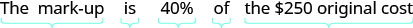 |
|
| Translate into an equation. | ||
| Step 5. Solve the equation. | ||
| Step 6. Check. Does this make sense? | ||
| Yes, 40% is less than one-half and 100 is less than half of 250. | ||
| Step 7. Answer the question with a complete sentence. | The mark-up on the phtograph was $100. |
| Step 1. Read the problem again. | ||
| Step 2. Identify what we are looking for. | the list price | |
| Step 3. Name what we are looking for. | ||
| Choose a variable to represent it. | Let the list price. | |
| Step 4. Translate into an equation. | ||
| Write a sentence that gives the information to find it. | 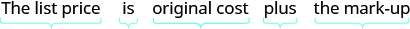 |
|
| Translate into an equation. | ||
| Step 5. Solve the equation. | ||
| Step 6. Check. Does this make sense? | ||
| Is the list price more than the net price? Is $350 more than $250? Yes. |
||
| Step 7. Answer the question with a complete sentence. | The list price of the photograph was $350. |
Key Concepts
-
Percent Increase To find the percent increase:
- Find the amount of increase.
- Find the percent increase. Increase is what percent of the original amount?
-
Percent Decrease To find the percent decrease:
- Find the amount of decrease.
- Find the percent decrease. Decrease is what percent of the original amount?
-
Simple Interest If an amount of money, P, called the principal, is invested for a period of t years at an annual interest rate r, the amount of interest, I, earned is
-
Discount
- amount of discount is discount rate original price
- sale price is original price – discount
-
Mark-up
- amount of mark-up is mark-up rate original cost
- list price is original cost + mark up
Practice Makes Perfect
Translate and Solve Basic Percent Equations
In the following exercises, translate and solve.
What number is 45% of 120?
Solution
54
What number is 65% of 100?
What number is 24% of 112?
Solution
26.88
What number is 36% of 124?
250% of 65 is what number?
Solution
162.5
150% of 90 is what number?
800% of 2250 is what number?
Solution
18,000
600% of 1740 is what number?
28 is 25% of what number?
Solution
112
36 is 25% of what number?
81 is 75% of what number?
Solution
108
93 is 75% of what number?
8.2% of what number is $2.87?
Solution
$35
6.4% of what number is $2.88?
11.5% of what number is $108.10?
Solution
$940
12.3% of what number is $92.25?
What percent of 260 is 78?
Solution
30%
What percent of 215 is 86?
What percent of 1500 is 540?
Solution
36%
What percent of 1800 is 846?
30 is what percent of 20?
Solution
150%
50 is what percent of 40?
840 is what percent of 480?
Solution
175%
790 is what percent of 395?
Solve Percent Applications
In the following exercises, solve.
Geneva treated her parents to dinner at their favorite restaurant. The bill was $74.25. Geneva wants to leave 16% of the total bill as a tip. How much should the tip be?
Solution
$11.88
When Hiro and his co-workers had lunch at a restaurant near their work, the bill was $90.50. They want to leave 18% of the total bill as a tip. How much should the tip be?
Trong has 12% of each paycheck automatically deposited to his savings account. His last paycheck was $2165. How much money was deposited to Trong’s savings account?
Solution
$259.80
Cherise deposits 8% of each paycheck into her retirement account. Her last paycheck was $1,485. How much did Cherise deposit into her retirement account?
One serving of oatmeal has eight grams of fiber, which is 33% of the recommended daily amount. What is the total recommended daily amount of fiber?
Solution
24.2 g
One serving of trail mix has 67 grams of carbohydrates, which is 22% of the recommended daily amount. What is the total recommended daily amount of carbohydrates?
A bacon cheeseburger at a popular fast food restaurant contains 2070 milligrams (mg) of sodium, which is 86% of the recommended daily amount. What is the total recommended daily amount of sodium?
Solution
2407 mg
A grilled chicken salad at a popular fast food restaurant contains 650 milligrams (mg) of sodium, which is 27% of the recommended daily amount. What is the total recommended daily amount of sodium?
After 3 months on a diet, Lisa had lost 12% of her original weight. She lost 21 pounds. What was Lisa’s original weight?
Solution
175 lb.
Tricia got a 6% raise on her weekly salary. The raise was $30 per week. What was her original salary?
Yuki bought a dress on sale for $72. The sale price was 60% of the original price. What was the original price of the dress?
Solution
$120
Kim bought a pair of shoes on sale for $40.50. The sale price was 45% of the original price. What was the original price of the shoes?
Tim left a $9 tip for a $50 restaurant bill. What percent tip did he leave?
Solution
18%
Rashid left a $15 tip for a $75 restaurant bill. What percent tip did he leave?
The nutrition fact sheet at a fast food restaurant says the fish sandwich has 380 calories, and 171 calories are from fat. What percent of the total calories is from fat?
Solution
45%
The nutrition fact sheet at a fast food restaurant says a small portion of chicken nuggets has 190 calories, and 114 calories are from fat. What percent of the total calories is from fat?
Emma gets paid $3,000 per month. She pays $750 a month for rent. What percent of her monthly pay goes to rent?
Solution
25%
Dimple gets paid $3,200 per month. She pays $960 a month for rent. What percent of her monthly pay goes to rent?
Find Percent Increase and Percent Decrease
In the following exercises, solve.
Tamanika got a raise in her hourly pay, from $15.50 to $17.36. Find the percent increase.
Solution
12%
Ayodele got a raise in her hourly pay, from $24.50 to $25.48. Find the percent increase.
Annual student fees at the University of California rose from about $4,000 in 2000 to about $12,000 in 2010. Find the percent increase.
Solution
200%
The price of a share of one stock rose from $12.50 to $50. Find the percent increase.
According to Time magazine annual global seafood consumption rose from 22 pounds per person in the 1960s to 38 pounds per person in 2011. Find the percent increase. (Round to the nearest tenth of a percent.)
Solution
72.7%
In one month, the median home price in the Northeast rose from $225,400 to $241,500. Find the percent increase. (Round to the nearest tenth of a percent.)
A grocery store reduced the price of a loaf of bread from $2.80 to $2.73. Find the percent decrease.
Solution
2.5%
The price of a share of one stock fell from $8.75 to $8.54. Find the percent decrease.
Hernando’s salary was $49,500 last year. This year his salary was cut to $44,055. Find the percent decrease.
Solution
11%
In 10 years, the population of Detroit fell from 950,000 to about 712,500. Find the percent decrease.
In 1 month, the median home price in the West fell from $203,400 to $192,300. Find the percent decrease. (Round to the nearest tenth of a percent.)
Solution
5.5%
Sales of video games and consoles fell from $1,150 million to $1,030 million in 1 year. Find the percent decrease. (Round to the nearest tenth of a percent.)
Solve Simple Interest Applications
In the following exercises, solve.
Casey deposited $1,450 in a bank account with interest rate 4%. How much interest was earned in two years?
Solution
$116
Terrence deposited $5,720 in a bank account with interest rate 6%. How much interest was earned in 4 years?
Robin deposited $31,000 in a bank account with interest rate 5.2%. How much interest was earned in 3 years?
Solution
$4,836
Carleen deposited $16,400 in a bank account with interest rate 3.9%. How much interest was earned in 8 years?
Hilaria borrowed $8,000 from her grandfather to pay for college. Five years later, she paid him back the $8,000, plus $1,200 interest. What was the rate of interest?
Solution
3%
Kenneth loaned his niece $1,200 to buy a computer. Two years later, she paid him back the $1,200, plus $96 interest. What was the rate of interest?
Lebron loaned his daughter $20,000 to help her buy a condominium. When she sold the condominium four years later, she paid him the $20,000, plus $3,000 interest. What was the rate of interest?
Solution
3.75%
Pablo borrowed $50,000 to start a business. Three years later, he repaid the $50,000, plus $9,375 interest. What was the rate of interest?
In 10 years, a bank account that paid 5.25% earned $18,375 interest. What was the principal of the account?
Solution
$35,000
In 25 years, a bond that paid 4.75% earned $2,375 interest. What was the principal of the bond?
Joshua’s computer loan statement said he would pay $1,244.34 in interest for a 3-year loan at 12.4%. How much did Joshua borrow to buy the computer?
Solution
$3,345
Margaret’s car loan statement said she would pay $7,683.20 in interest for a 5-year loan at 9.8%. How much did Margaret borrow to buy the car?
Solve Applications with Discount or Mark-up
In the following exercises, find the sale price.
Perla bought a cell phone that was on sale for $50 off. The original price of the cell phone was $189.
Solution
$139
Sophie saw a dress she liked on sale for $15 off. The original price of the dress was $96.
Rick wants to buy a tool set with original price $165. Next week the tool set will be on sale for $40 off.
Solution
$125
Angelo’s store is having a sale on televisions. One television, with original price $859, is selling for $125 off.
In the following exercises, find ⓐ the amount of discount and ⓑ the sale price.
Janelle bought a beach chair on sale at 60% off. The original price was $44.95.
Solution
ⓐ $26.97 ⓑ $17.98
Errol bought a skateboard helmet on sale at 40% off. The original price was $49.95.
Kathy wants to buy a camera that lists for $389. The camera is on sale with a 33% discount.
Solution
ⓐ $128.37 ⓑ $260.63
Colleen bought a suit that was discounted 25% from an original price of $245.
Erys bought a treadmill on sale at 35% off. The original price was $949.95 (round to the nearest cent.)
Solution
ⓐ $332.48 ⓑ $617.47
Jay bought a guitar on sale at 45% off. The original price was $514.75 (round to the nearest cent.)
In the following exercises, find ⓐ the amount of discount and ⓑ the discount rate. (Round to the nearest tenth of a percent if needed.)
Larry and Donna bought a sofa at the sale price of $1,344. The original price of the sofa was $1,920.
Solution
ⓐ $576 ⓑ 30%
Hiroshi bought a lawnmower at the sale price of $240. The original price of the lawnmower is $300.
Patty bought a baby stroller on sale for $301.75. The original price of the stroller was $355.
Solution
ⓐ $53.25 ⓑ 15%
Bill found a book he wanted on sale for $20.80. The original price of the book was $32.
Nikki bought a patio set on sale for $480. The original price was $850. To the nearest tenth of a percent, what was the rate of discount?
Solution
ⓐ $370 ⓑ 43.5%
Stella bought a dinette set on sale for $725. The original price was $1,299. To the nearest tenth of a percent, what was the rate of discount?
In the following exercises, find ⓐ the amount of the mark-up and ⓑ the list price.
Daria bought a bracelet at original cost $16 to sell in her handicraft store. She marked the price up 45%.
Solution
ⓐ $7.20 ⓑ $23.20
Regina bought a handmade quilt at original cost $120 to sell in her quilt store. She marked the price up 55%.
Tom paid $0.60 a pound for tomatoes to sell at his produce store. He added a 33% mark-up.
Solution
ⓐ $0.20 ⓑ $0.80
Flora paid her supplier $0.74 a stem for roses to sell at her flower shop. She added an 85% mark-up.
Alan bought a used bicycle for $115. After re-conditioning it, he added 225% mark-up and then advertised it for sale.
Solution
ⓐ $258.75 ⓑ $373.75
Michael bought a classic car for $8,500. He restored it, then added 150% mark-up before advertising it for sale.
Everyday Math
Leaving a Tip At the campus coffee cart, a medium coffee costs $1.65. MaryAnne brings $2.00 with her when she buys a cup of coffee and leaves the change as a tip. What percent tip does she leave?
Solution
21.2%
Splitting a Bill Four friends went out to lunch and the bill came to $53.75. They decided to add enough tip to make a total of $64, so that they could easily split the bill evenly among themselves. What percent tip did they leave?
Writing Exercises
Without solving the problem “44 is 80% of what number” think about what the solution might be. Should it be a number that is greater than 44 or less than 44? Explain your reasoning.
Solution
The number should be greater than 44. Since 80% equals 0.8 in decimal form, 0.8 is less than one, and we must multiply the number by 0.8 to get 44, the number must be greater than 44.
Without solving the problem “What is 20% of 300?” think about what the solution might be. Should it be a number that is greater than 300 or less than 300? Explain your reasoning.
After returning from vacation, Alex said he should have packed 50% fewer shorts and 200% more shirts. Explain what Alex meant.
Solution
He meant that he should have packed half the shorts and twice the shirts.
Because of road construction in one city, commuters were advised to plan that their Monday morning commute would take 150% of their usual commuting time. Explain what this means.
Self Check
ⓐ After completing the exercises, use this checklist to evaluate your mastery of the objectives of this section.

ⓑ After reviewing this checklist, what will you do to become confident for all goals?